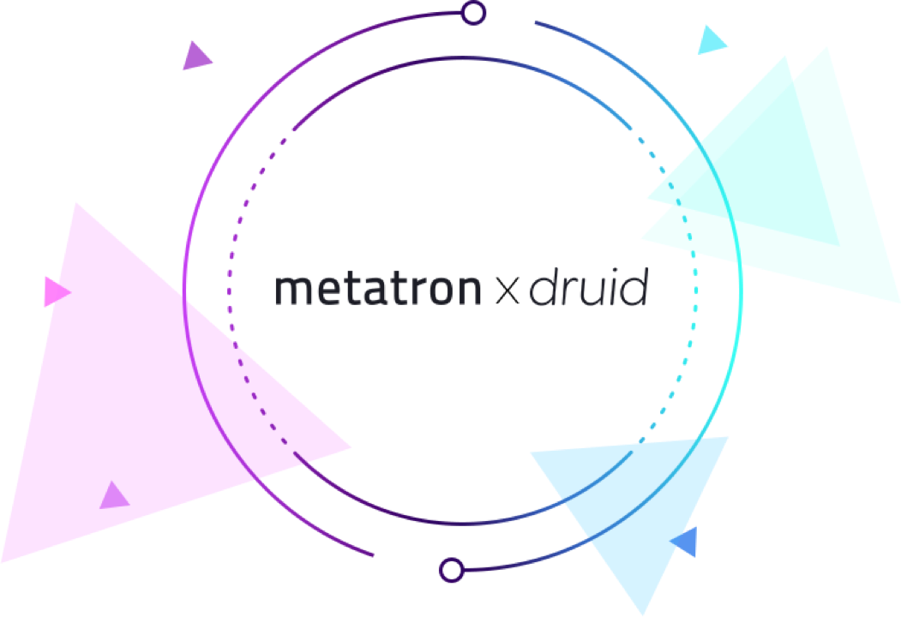

Metatron 기본 엔진: Druid¶
근래에 들어 정보통신 기술의 발전과 함께 데이터 발생량이 비약적으로 증가하였고, 이를 효율적으로 수집·관리·활용하는 것의 중요성이 대두되고 있습니다. 하지만 RDBMS 위주의 레거시 시스템들로는 대용량의 다차원 데이터를 온전히 처리할 수가 없기 때문에 차세대 빅데이터 수요를 충족시키기 위한 새로운 방법론과 솔루션들이 대거 등장하기 시작하였습니다.
미국 실리콘 밸리에 소재한 스타트업 Metamarkets사에서는 2011년 Druid라는 컬럼 기반 분산형 데이터 스토어를 출시하였고 2012년 10월 이를 오픈소스로 전환하였는데, 빠르고 효율적인 데이터 처리를 비롯한 여러 장점 때문에 많은 기업에서 Druid를 backend 기술로 활용하고 있습니다.
이러한 흐름에서 SK텔레콤도 B2C 이동통신 서비스 제공업체로서 매순간 이용자들로부터 발생하는 엄청난 양의 네트워크 데이터를 효과적으로 관리·분석할 필요가 있었으며, 2016년 Druid를 기본 엔진으로 활용한 end-to-end 비즈니스 인텔리전스 솔루션 Metatron을 개발·출시하였습니다.

본 단원에서는 시계열 데이터 처리에 적합한 Druid의 특징에 대해 알아본 후 SK텔레콤의 Metatron에서 이를 어떤 식으로 적용하고 추가 기능들을 개발하였는지 소개합니다.